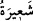
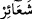

dediler. Fakat Hz. Peygamber (s.a.v) bunu kabul etmedi. İşte bunun üzerine bu âyet nâzil
oldu.[232]
O vakit müşrikler, Mescid-i Harâm’a gelip haccediyor ve kurban kesiyorlardı.
Müslümanlar buna mâni olmak istedilerse de Cenab-ı Hak onları böyle davranmaktan
men etmiştir.
-“”, “” nin çoğuludur. İşâret ve nişan kılınan şey için isim olmuştur. Bunlar,
hac ibâdetinin yapıldığı mekanlar, şeytan taşlama, tavaf ve sa’y yerleri ile hacının
yerine getirdiği ihram, tavaf, sa’y, kurban kesme ve traş olma gibi alâmetlerden ibâret
olan fiillerdir.
Âyetin mânası şöyledir: Bu alâmetlerin kudsiyetini hafife almayın. Allah’ın beytini
haccedenlerin amellerine ve hac mekanlarına ta’zim edenlere mâni olmayın.
“Haram aya” saygısızlık etmeyin. Yani hac ayında yasaklanmış olan savaşı ve talanı
helâl saymayınız. “Eşhüru’l-hurum” denilen bu dört haram ay, Zülka’de, Zülhicce,
Muharrem ve Receb aylarıdır. Âyette bu dördünü ifade etmek üzere “şehr” lafzının tek
olarak kullanılması, cinsin beyânı içindir.
Allah’a hediye edilmiş “Kurbana” da saygısızlık etmeyin. Onları gasp etmeyin ve
mahalline ulaşmasına mâni olmayın. Buradaki kurbanlar, Allah’a yaklaşmak için
Kâbe’ye hediye edilen deve, sığır ve koyun cinsinden hayvanlardır.
O hayvanlardaki “gerdanlıklara” saygısızlık etmeyin. Gerdanlıklı olanlar
kurbanlıklar içinde en şerefli, olanlardır. Onun için özellikle onlara tecâvüz ve
saygısızlık etmeyin. “Kalâid” kelimesi, “kılâde”nin çoğuludur. “Kılâde”, yani
gerdanlık devenin ve diğer hayvanların boynuna, kurbanlık olduğunun bilinmesi ve
taarruz edilmemesi için bağlanan ayakkabı, yontulmuş bir ağaç parçası ve benzeri
şeylerdir.
“Rablerinin lütuf ve rızâsını arayarak Beyt-i Harâm’a yönelmiş kimselere
saygısızlık etmeyin.” Hangi sebeple olursa olsun sırf Kâbe’yi ziyâret etmek için gelen
bir topluluğa mâni olmayın. Bu maksatla yapılacak bir ziyâreti engellemeyi helâl
saymayın. Onlar rızık temin etmek ve kendi iddiâlarına göre Allah’ın rızâsını talep
etmek üzere Kâbe’yi ziyâret etmek için yola çıkmışlardır. Oysa kâfirin müslüman
olmadığı sürece Allah’ın rızâsından nasibi yoktur.
“İrşad”da şöyle denilmiştir: Doğru bir din üzere olduklarını ve haccın kendilerini
Allah’a yaklaştıracağını zannediyorlardı. Allah, onları kendi zannettikleri şey üzere
zikrediyor. Ancak bu fasit bir zandır. Kâfirlerin halleri zannettikleri gibi değildir. Her
ne kadar bu halleri ile kâfirler Allah’ın rızâsından uzak olsalar da bâzı dünyevî
isteklerine nâil olmaları uzak bir ihtimal değildir. Hattâ Allah’ın hukûkuna riâyet
ettikleri ve onun işâretlerine saygı gösterdikleri müddetçe, başlarına gelebilecek bâzı
istenmeyen durumlardan da kurtulmaları mümkündür.
Âyetin buraya kadar olan kısmı şu âyetlerle nesh edilmiştir: “Müşrikleri nerede
bulursanız öldürün.” (Tevbe 9/5) “(Müşrikler) artık bu yıllarından sonra Mescid-i
Haram’a yaklaşmasınlar.” (Tevbe 9/28) Bu yüzden artık herhangi bir müşriğin